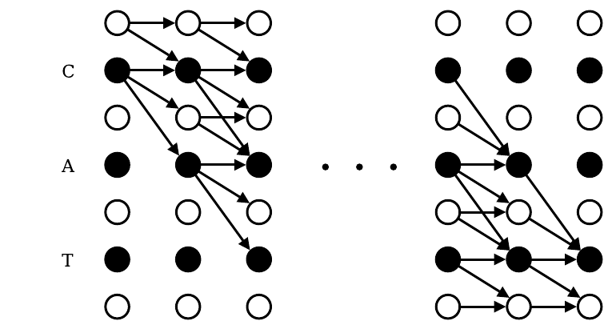

On this page
If we had a sequence of input frames, and we knew the label for each frame (we don’t here) then we could just score each frame against its known label and average over frames.
But this assumes a frame-to-label alignment. We don’t have labels for every frame and the target tokens are much shorter than input. The speech sequence length typically 1000 frames for 10 sec is much longer than the text token, maybe 20 words and we don’t know frame to token alignment.
We need a loss that doesn’t require explicit alignment and can collapse variable length frame prediction into a shorter token length. This is where “Connectionist Temporal Classification” (CTC) loss comes to play.
CTC augments the vocabulary with a blank token, no label. This allows the frames to correspond to no output symbols. So, now you have T frames and each frame gets a probability distribution over V+1 (tokens + blank).
To get final transcriptions from a frame sequence you have to merge their predictions. You merge repeated tokens and remove blanks. CTC loss uses dynamic programming to sum the probabilities of all possible alignments between frames and target tokens and does this efficiently.
10 input frames, one prediction per frame
3 output tokens
π is one path: the prediction picked at each frame. B(π) is that path after the collapse rule is applied to it. The blank token soaks up the extra frames. Ten noisy frames collapse to three real tokens, so the model never needs to know where each letter starts or ends.
That diagram is the whole trick, but it is static. In this path builder, each path you lay down, one cell per frame from left to right, collapses by the same rule the diagram shows:
How to play
Each frame has a probability mass over many tokens and thus can create multiple alignments. We sum over all valid alignments that lead to ground truth. But, this is a lot of alignments. Each frame can pick from the whole vocabulary plus a blank token, so over a long sequence the number of possible alignments explodes. Even with 50 symbols per frame and 100 frames, the path count is astronomically large.
With CTC the model doesn’t output one label, it outputs a probability distribution over all possible labels at each frame. Alignments are not generated arbitrarily from predictions, they are constrained by the ground truth. Alignment is one possible frame level sequence that when collapsed equal to the ground truth.
The predictions supply the probability at each frame and the ground truth constrain which sequence of choices we care about. We compute the total probability of the ground truth string by summing over all valid alignment paths.
In short: the total probability of the ground truth given the input. Each alignment path contributes the product of its per-frame probabilities, summed over every path that collapses to the ground truth.
In plain language: pick one alignment path, multiply the model's per-frame probabilities along it, then do that for every path that collapses to the ground truth and add them up. The path c c - a t t from the path builder is one of those paths.
There are 84 paths that collapse to "cat", and their probabilities add up to the model's total belief that the audio says "cat", over every timing it can imagine. No single alignment is ever chosen during training.
Since multiple alignments can collapse to the same label sequence, the total probability of that sequence is the sum of all alignment probabilities.
The CTC loss is then just the negative log of that total probability.
Same negative-log trick as cross-entropy, one level up. The toy table gives that sum, and the loss is its negative log. If the model piles its mass onto alignments that collapse to the right transcript, the sum approaches 1 and the loss approaches 0. If the mass leaks onto wrong transcripts, the loss grows. The DP just computes that sum without enumerating paths.
Well that’s a lot of math that you probably don’t need, but the big idea here is that we need to find the alignments that collapse to the target word and use our model’s probability predictions to score each valid alignment. CTC doesn’t enumerate every single alignment though. It uses forward-backward dynamic programming algorithm to efficiently sum their probabilities.
At each input you can output either a symbol or a blank token. A valid alignment is any sequence of that collapse to the ground truth after removing blanks and merging consecutive duplicates. You can think of this as a leetcode hard problem, counting paths. We need to count how many paths collapse to the target sequence and once we have that we can replace those counts with probabilities.
A naive CTC would be a softmax with repeat collapse. You take the single best-scoring alignment and collapse repeats accordingly. It’s simple and fast and it doesn’t work! It assumes each character or phoneme is well aligned in time or clearly segmented. Misalignment and variable timing will cause errors.
CTC builds an extended target sequence with blanks inserted between every character.
Where the length is twice the target length, plus one. Now let’s define a DP table. Our original target of length 3 has been extended to 7. Blanks are guard rails, they allow for variable timing and disambiguating repeats. Now think of aligning the 6 frames to the 7 positions in the extended sequence. At each frame you stay on the same symbol or move to the next symbol. Each step you can:
1 (always)2 (only if skipping a blank between different symbols)This is like a lattice, each node is (t,s) at time t and target position s. So, now our table looks like 6 frames/rows by 7 alignments/columns. Number of rows are your input length and columns are the extended target length. Time axis is how far we have processed the input and the extended target axis is how far we’ve matched in to the target string. A path through this grid is one alignment.
From any cell, the DP table says: what is the probability (or count) of being aligned to this position in the extended target.
Rebuilt from Figure 3 of Graves et al. (ICML 2006). doi:10.1145/1143844.1143891

Figure 3. illustration of the forward backward algorithm applied to the labelling 'CAT'. Black circles represent labels, and white circles represent blanks. Arrows signify allowed transitions. Forward variables are updated in the direction of the arrows, and backward variables are updated against them. The paper's actual figure, cropped from the published ICML 2006 version.
This is the exact lattice the forward table walks through. The black circles are the labels and blanks of the extended target: compare them with the - c - a - t - column headers in the forward table. The arrows are the stay, step, and skip moves that the table's orange arrows trace row by row. In the forward table, each column's cells add up exactly the paths this figure draws.
The transition rule: Each cell in the table adds up the ways to reach it: staying on the same symbol from the previous frame, advancing one symbol, or skipping over a blank token when that is valid. This is the forward algorithm. After filling the whole table the number of valid alignments is the sum of the two ways to finish: ending on the final character or on a trailing blank.
import numpy as np
def ctc_forward(probs, target):
"""
probs: array (T, V) with softmax probs for each frame
V includes all symbols + blank
target: list of symbols, e.g. ['C','A','T']
"""
# 1. Build extended target
extended = ['_']
for ch in target:
extended += [ch, '_']
S = len(extended)
# Map symbol -> index in probs
vocab = {ch: i for i, ch in enumerate(set(extended))}
T = probs.shape[0]
alpha = np.zeros((T, S))
# 2. Initialize first frame
alpha[0][0] = probs[0, vocab[extended[0]]] # prob of blank at t=0
alpha[0][1] = probs[0, vocab[extended[1]]] # prob of 'C' at t=0
# 3. Fill DP table
for t in range(1, T):
for s in range(S):
stay = alpha[t-1][s]
prev = alpha[t-1][s-1] if s-1 >= 0 else 0
skip = alpha[t-1][s-2] if (s-2 >= 0 and extended[s] != extended[s-2]) else 0
alpha[t][s] = probs[t, vocab[extended[s]]] * (stay + prev + skip)
# 4. Final probability
return alpha[T-1][S-1] + alpha[T-1][S-2]
The forward code looks like accounting. Run once in the forward table, it stops looking like accounting: every cell is just asking its three neighbors "how did you get here?" and adding up their answers times today's probability. That is the whole forward algorithm.
Columns are the extended target - c - a - t -: a blank guard rail between every pair of letters (and at both ends), so three letters need seven columns.
αt(s) the cell's total: every way to reach column s by frame t (blue = the spotlight cell, just computed)pt(l′s) frame t's predicted probability for the column's characterαt−1(s) stay, αt−1(s−1) step, αt−1(s−2) skip: the three incoming flows (orange arrows)· times today's probability; + sum the three flows; = defines the cell; l′s the extended target's character at column s; ≠ skip allowed only when the two columns differEvery cell asks three neighbors how they got here and multiplies by today's probability. Six rows later you hold the sum over all 84 alignments without enumerating a single one. That is dynamic programming.
How to play
84 alignments is computed by dynamic programming: each cell adds up its three neighbors' totals and multiplies by the current frame's probability, so the 84-path sum emerges from local additions with no enumeration.This is our p(y|x), we just efficiently computed the sum. This is the probability of target under the model.
Okay, so does this actually work? I didn’t run this one myself, so here is the number from the literature instead. Graves et al. trained a bidirectional LSTM with CTC on the TIMIT speech corpus and reported label error rate on the core test set, mean over 5 runs:
Model: BLSTM + CTC, 100 blocks per direction. Dataset: TIMIT (26 MFCC coeffs per frame, 61 phonemes + blank). Source: Graves et al., "Connectionist Temporal Classification", ICML 2006, Table 1 (literature reference, not run here).
But, we also need gradients w.r.t. to the model’s softmax outputs at each frame during training. We need to know at frame 1 how much probability was aligned “A” vs blank. This is the posterior probability.
The forward gives you the prefix probability, all the probability mass up to this frame and target position. The backward gives you the suffix probability, all the mass from here to the end. Combine them and you get how likely this frame really belongs to this target position.
import numpy as np
def ctc_forward_backward(probs, target):
"""
probs: np.array of shape (T, V) with softmax probabilities
(V includes all symbols + blank, accessed by dict)
target: list of symbols, e.g. ['C','A','T']
"""
# Build extended target with blanks
extended = ['_']
for ch in target:
extended += [ch, '_']
S = len(extended) # extended length
T = probs.shape[0] # number of frames
# Map symbol -> index in probs
vocab = {ch: i for i, ch in enumerate(set(extended))}
# Forward DP
alpha = np.zeros((T, S))
alpha[0][0] = probs[0, vocab[extended[0]]]
alpha[0][1] = probs[0, vocab[extended[1]]]
for t in range(1, T):
for s in range(S):
stay = alpha[t-1][s]
prev = alpha[t-1][s-1] if s-1 >= 0 else 0
skip = alpha[t-1][s-2] if (s-2 >= 0 and extended[s] != extended[s-2]) else 0
alpha[t][s] = probs[t, vocab[extended[s]]] * (stay + prev + skip)
# Backward DP
beta = np.zeros((T, S))
# initialize last frame
beta[T-1][S-1] = probs[T-1, vocab[extended[S-1]]] # last blank
beta[T-1][S-2] = probs[T-1, vocab[extended[S-2]]] # last symbol
for t in reversed(range(T-1)): # from T-2 down to 0
for s in range(S):
same = beta[t+1][s]
nxt = beta[t+1][s+1] if s+1 < S else 0
skip = beta[t+1][s+2] if (s+2 < S and extended[s] != extended[s+2]) else 0
beta[t][s] = probs[t, vocab[extended[s]]] * (same + nxt + skip)
# Total probability (should match forward and backward)
total_prob = alpha[T-1][S-1] + alpha[T-1][S-2]
return alpha, beta, total_prob, extended
The path toy showed you one alignment. Training never picks one. Here is where the credit actually goes. Each cell below answers one question: how much does frame t belong to position s of the target? Untrained, the answer is "everywhere, a little". Trained, the answer is "right here, a lot". That sharpening is learning.
How to play
Training is not "pick the best path". It is "spread credit over all paths". The mass smears across the valid region, then concentrates as the model learns. The per-frame softmax tables are fixed illustrative toys, not a real model's output.
The forward score is the prefix mass, the backward score the suffix mass; combined and normalized, they give each frame's share of the credit. The gradient at each frame is that share minus what the model predicted.
At inference, we need to figure out which output sequence to return. If the model is confident and the output space is small or constrained then a greedy decoding is okay. But, that would throw away a lot of probability mass. Beam search recovers some of it by merging multiple paths that collapse to the same candidate sequence.
def simple_ctc_beam_search(probs, beam_size=3, top_k=3):
"""
probs: (T, V) softmax probabilities over vocab (incl blank "_")
"""
beams = {"": 1.0} # start with empty prefix and prob=1
for t in range(len(probs)):
new_beams = {}
# pick top_k symbols at this frame
top_syms = np.argsort(probs[t])[-top_k:]
for prefix, prob in beams.items():
for sym in top_syms:
p = probs[t][sym]
if sym == "_":
new_prefix = prefix
else:
# collapse rule: if repeat, don't double add
if prefix.endswith(sym):
new_prefix = prefix # same seq
else:
new_prefix = prefix + sym
# accumulate probability
new_beams[new_prefix] = new_beams.get(new_prefix, 0) + prob * p
# prune to top beam_size
beams = dict(sorted(new_beams.items(), key=lambda x: -x[1])[:beam_size])
return max(beams.items(), key=lambda x: x[1])
Greedy decoding is lazy. It takes the best symbol at each frame and calls it a day, which means it sees exactly one path: "ab". But fourteen other paths collapse to "ab" too, and greedy never looks at them. With beam width 3, the "ab" bar eats fifteen thin segments. That stacking IS beam search: it recovers probability mass by merging. The code above does this in twenty-seven lines; the bars show you what those lines are actually doing.
| frame | _ (blank) | a | b |
|---|---|---|---|
| t0 | 0.20 | 0.50 | 0.30 |
| t1 | 0.20 | 0.50 | 0.30 |
| t2 | 0.25 | 0.15 | 0.60 |
| t3 | 0.25 | 0.15 | 0.60 |
Fixed illustrative table. Collapse rule is standard CTC: merge repeats first, then drop blanks.
Greedy sees one path. Beam search sees every path that collapses to the same answer and adds them up. That merging is where the extra probability mass comes from, and it is the entire reason beam search beats greedy.
How to play
3, beam search merges fifteen paths into the "ab" answer and keeps probability mass that greedy decoding at width 1 throws away.CTC assumes each frame's prediction is independent of the others: the model cannot use what it already output to help predict what comes next. When that independence hurts, the named follow-up is RNN-T: it adds a prediction network that conditions on previous outputs, so the model learns a language model alongside the acoustics. It earns its place wherever the output has strong sequence structure, like language.